01 · The problem
Why fine-tuning forgets
We begin with one old input x and one linear layer
y = Wx. Fine-tuning changes the weight to
W + ΔW, so the old output becomes
y + ΔWx. The new-task loss rewards useful changes on new examples.
It does not require ΔWx to stay small for unrelated old inputs.
That matters because a pretrained model is not an empty notebook. The same parameters jointly support reasoning, coding, instruction following, factual recall, formatting, and many other behaviors. An unrestricted update can improve the active task while disturbing this shared substrate.
A clue from low-forgetting training
Related work finds a geometric difference between supervised fine-tuning and reinforcement learning with verifiable rewards (RLVR). SFT updates rotate the principal input and output directions more strongly. RLVR updates concentrate more in the non-principal, low-energy space, preserve those dominant directions, and forget less.
This suggests a direct intervention: preserve the principal subspaces and route fine-tuning updates through the remaining space.
This isolates SST’s question: can we keep the loss and optimizer unchanged, but control where each realized update is allowed to write?
02 · The geometry
Where can the model still write?
Singular value decomposition rewrites a weight matrix as a set of one-dimensional input–output channels:
vᵢ
→
strength σᵢ
→
output direction uᵢ
The right singular vector vᵢ says what direction the layer reads,
the left singular vector uᵢ says where it writes, and
σᵢ says how strongly that channel acts. Neural weight spectra are
concentrated: leading modes are much stronger than the tail.
This motivates a hypothesis. The principal modes may be load-bearing for broad pretrained behavior, while the non-principal tail may still provide enough capacity for a new task.
Split the input and output spaces into protected and free directions. Every proposed update then has four blocks:
| Protected input | Free input | |
|---|---|---|
| Protected output | remove | remove |
| Free output | remove | keep |
Πₖ(ΔW) = (I − UₖUₖᵀ) · ΔW · (I − VₖVₖᵀ)
Uₖ and Vₖ are the top-k left and right singular directions.
The two-sided projection is essential: all three blocks touching a protected input or output are removed. With a fixed basis, each applied step for a targeted matrix stays exactly in its allowed free-to-free subspace and preserves the protected singular triplets relative to that anchor.
The geometry now tells us what an allowed update looks like. The next question is where in the optimization pipeline to enforce it.
03 · The method
Project the applied update, not the gradient
With plain SGD, projecting the gradient and projecting the step are equivalent because the step is only a scalar multiple of the gradient. Adam and other preconditioning optimizers are different: their coordinate-wise or matrix transformations generally need not commute with the spectral projector.
A gradient can therefore begin inside the free subspace and emerge from the optimizer with a protected component. SST lets the optimizer update its state normally, forms the candidate parameter change, and projects that final applied update.
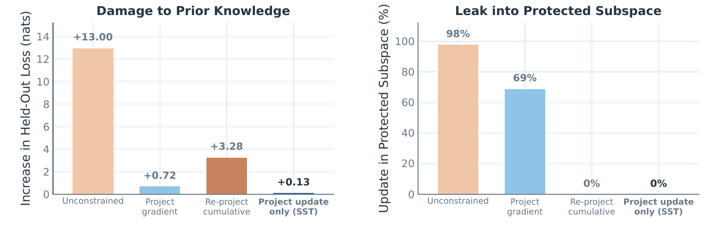
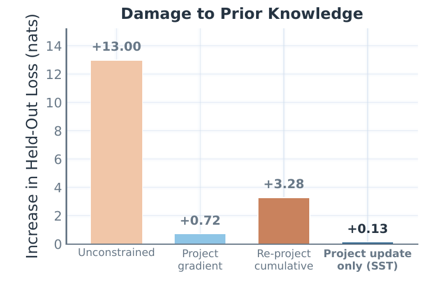
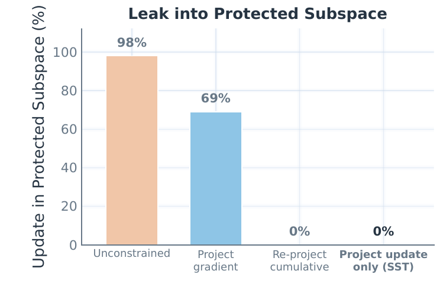
r = 0.99, and targeted attention/MLP maps. All four methods fit the task.
Open full figure ↗
Projecting the gradient reduces damage but still leaks. Re-projecting the cumulative change eliminates leakage but produces a worse free-space step. In this controlled test, SST alone combines zero measured leakage with almost no held-out NLL increase. Because it projects the candidate parameter change, it also removes forbidden components introduced by decoupled weight decay.
Refresh lets the learning path turn
- No refresh
- The original protected basis remains fixed. This gives the strictest guarantee relative to the pretrained anchor.
- R100 / R10
- Re-anchor and recompute the basis every 100 or 10 optimizer steps. More frequent refresh opens new directions but mildly weakens protection relative to the original model.
Without refresh, every update passes through the tail chosen at step zero. As training moves, a useful later optimizer proposal may overlap less with that fixed free subspace.
Wₜ
→
SVD
→
new projector Πₜ
Repeated refreshes can stitch together accepted steps from changing, locally constrained tails instead of forcing the whole run through one tail chosen at the start.
Conceptual algorithm
Uₖ, Vₖ = top_k_svd(W)
for step in training_steps:
ΔW = optimizer.propose(g)
ΔW_free = (I − UₖUₖᵀ) ΔW
· (I − VₖVₖᵀ)
W += ΔW_free
if step is a refresh:
Uₖ, Vₖ = top_k_svd(W)
In the main experiments, SST targets the attention q, k, v, o and MLP
gate/up/down matrices. Other parameters receive their ordinary optimizer updates.
04 · Experiments
Results
Can the model learn while retaining?
The central comparison has two axes: target-task learning and retained prior capability. A method that refuses to move would retain perfectly but learn nothing. New-task accuracy measures the fine-tuned domain; prior capability is the average over GPQA, MMLU-Pro, GSM8K, HumanEval, and IFEval, none used for fine-tuning.
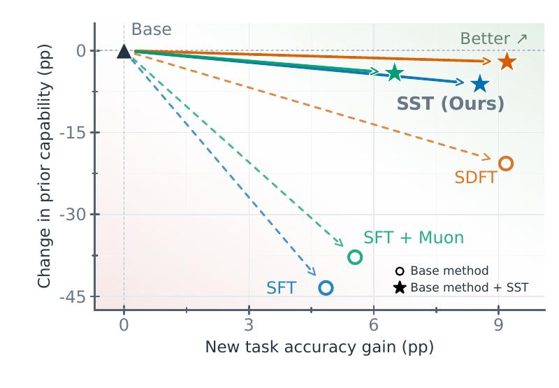
The trend also strengthens with model scale. In five-epoch Science fine-tuning, unconstrained SFT loses roughly 30–40 points of prior capability from 1.7B through 14B. SST approaches each model’s base capability as scale grows while reaching higher target accuracy.
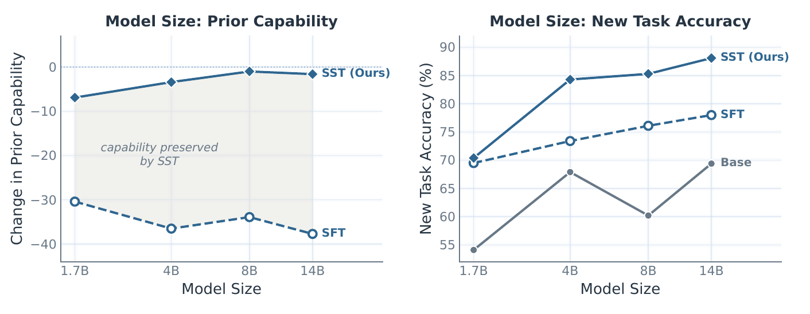
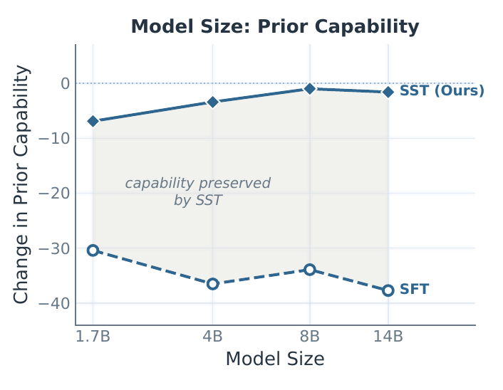
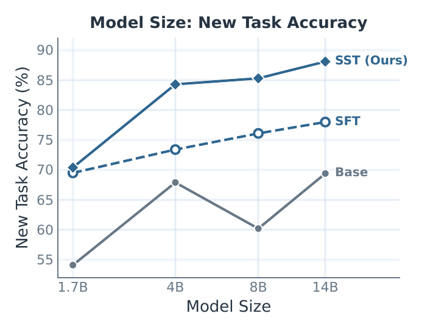
More exposure shows the same separation. Under a matched 45,000-example Science budget, using either fresh examples once or repeating 9,000 examples for five epochs, SFT drifts steadily while SST stays near the base and continues learning.
Does the policy itself drift less?
Accuracy cannot capture every change in a model’s output distribution. The paper
therefore measures exact token-level
KL(πbase ∥ πtuned) in nats per token on WikiText-2, which contains no
task training data.
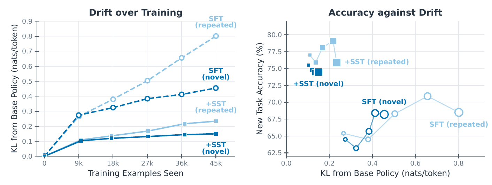
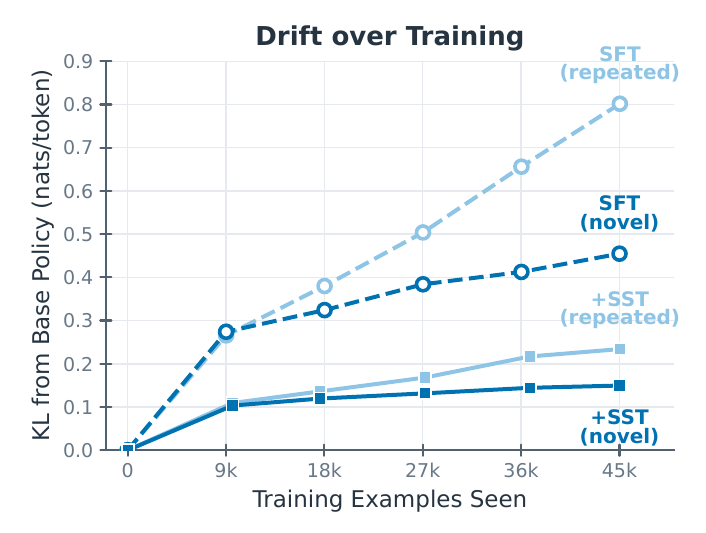
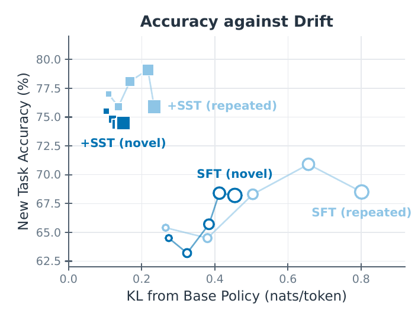
KL(πbase ∥ πtuned) by 2–4×.
Open full figure ↗
A narrower behavioral probe points the same way. On Olmo-3-7B-Think, SFT shortened mean responses from 4,716 to 836 tokens; SST+R10 brought them to 4,319. With SDFT, SST+R10 reduced a phrase-detected fabricated-reference attribution rate from 31.1% to 10.2%. Response length is not reasoning quality, and the phrase detector is not a general hallucination or factuality metric.
Does yesterday’s lesson survive tomorrow’s?
In a FinQA → Pathology → Science sequence, each line should rise when its task is trained and then hold while later tasks arrive.
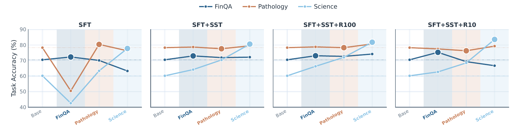
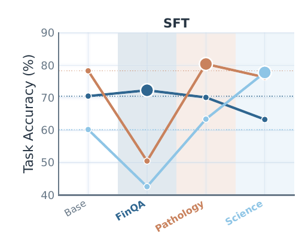
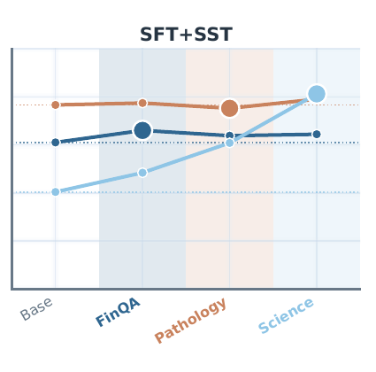
05 · Practical view
Overhead
- Extra trainable parameters
- 0. SST changes the feasible update, not the model architecture.
- Inference overhead
- 0. Projection is training-only; the result is an ordinary set of weights.
- Training overhead
- 1.5% per step in one Qwen3-8B, eight-L40S setup. Optional refresh adds frequency- and implementation-dependent training cost.
Open questions
- Choose protection adaptively. Use update drift to select
kand refresh timing. - Extend the horizon. Test larger models, longer traces, and more sequential tasks.
Let the optimizer propose.
Control where it writes.
SST turns one geometric observation into a small intervention: form the normal optimizer step, then keep only the part that reads from free inputs and writes to free outputs.
Read the paper ↗